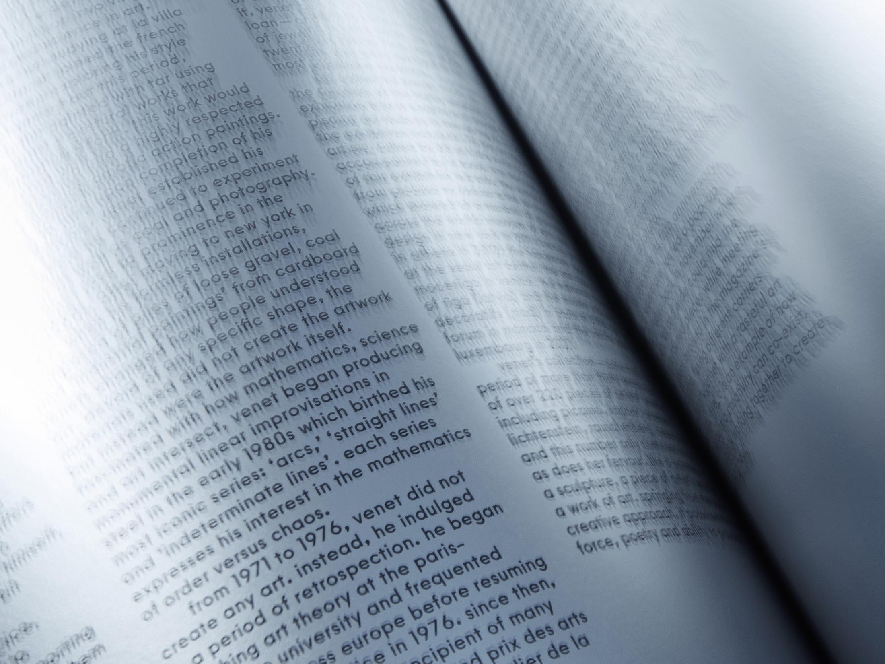
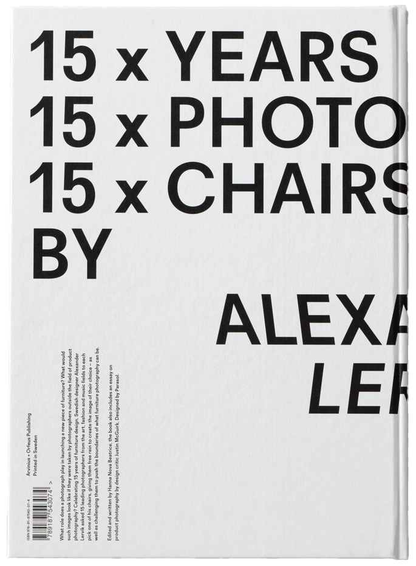

Office Oblitas Weingarten
We understand how to tell a story, how to differentiate to become memorable. To make people feel and connect with products, communities,
and places. For over 25 years, across five continents, we have imagined, created, and nurtured images in people’s minds. Our understanding
of visual language is deep. Our experience in branding and communication design has enabled us to create cohesive, flexible visual systems
that work across multiple platforms, ensuring recognisability and long-term impact. We create brand identity, graphic design, and art
direction for the industries of fashion, art, culture, and commerce. Good design stands at the crossroads of function and beauty. It engages,
compels, and makes perfect sense. This is what we strive to give our clients at OOW. The journey to get there should be a revelatory and
inspiring experience with strong relationships formed along the way. We observe and we listen until we understand: only then do we immerse
ourselves in the creative challenge. Our process aims to unearth and communicate the intangible essence of a brand that people fall in love
with. From its behaviour to its products; we believe every company has a story to tell and that design can be the most powerful way to tell it.
Recent projects include retail graphics for global sportswear ON Running, a multiple location signage commission at Zürich Airport, an on–
going art direction for a new travel industry magazine based out of Barcelona, and Vitra, SVT, OnceMore by Södra to name a few.
+46(0)70–1234–567
@office.ow
office@o-ow.com